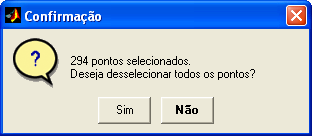

| Menu Dados |
|
Desselecionar
Esse grupo de
funções permite desselecionar
pontos da matriz de dados.
Os métodos de desseleção
disponíveis são:
Clique no menu “Dados ► Desselecionar ... ► [opção
desejada]”.
Após a desseleção, a quantidade de
pontos selecionados (apresentada no canto superior direito da janela)
será
atualizada:

Desselecionar por
Caixa
Essa função é
semelhante à função “Selecionar
/ desselecionar pontos”
com uso do botão direito
do mouse, porém é executada apenas uma vez a cada clique no menu,
não permanecendo continuamente ativada.
Clique no menu “Dados ► Desselecionar ... ► Por caixa”.
Após ativar a
função, defina um retângulo com o mouse para dessselecionar
todos os pontos do seu interior.
Exemplo:

Desselecionar Todos os
Pontos
Essa função
permite ao usuário desselecionar
todos os pontos selecionados.
Clique no menu “Dados ► Desselecionar ... ► Tudo” ou no
botão  na
Barra de Ferramentas.
na
Barra de Ferramentas.

Após a
confirmação, todos os pontos serão desselecionados.
| |
Selecionar
spikes |
Inverter
seleção |
|